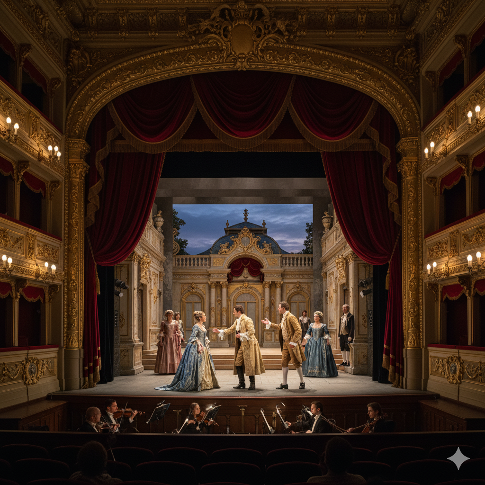
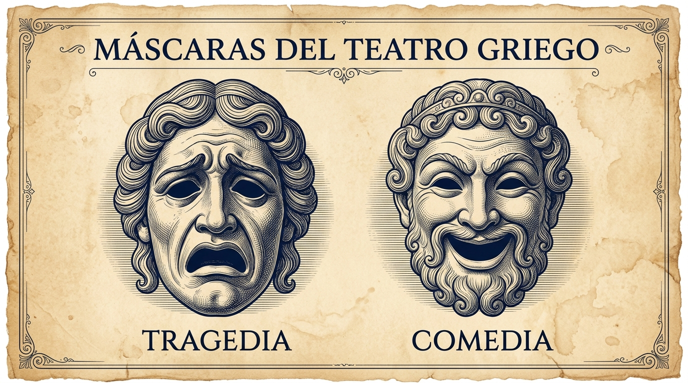
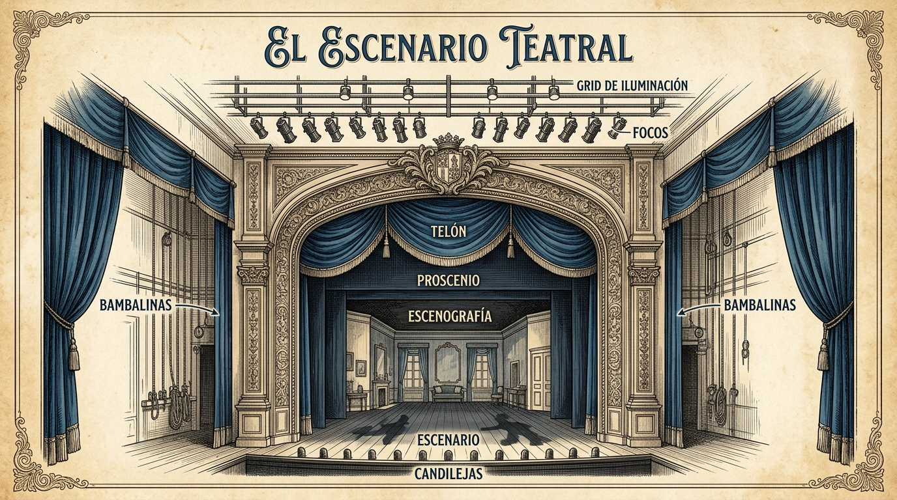
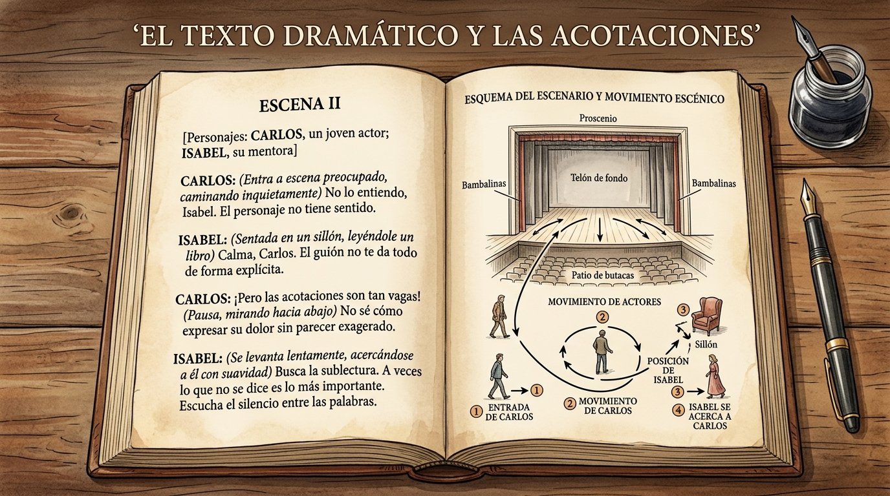
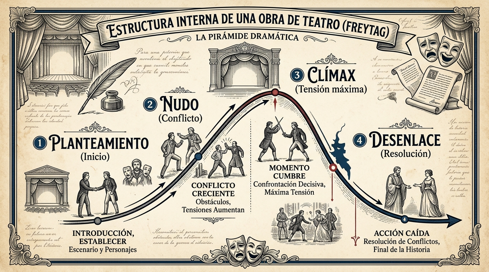

ELEMENTOS DEL TEATRO
Msc. Alejandro Córdova

¿Qué es el Texto Teatral?
A diferencia de la narrativa, el texto teatral no está concebido únicamente para la lectura silenciosa, sino para ser materializado en un escenario frente a un público espectador.
- Guion y partitura de acción: Contiene tanto la palabra dicha por los actores como las instrucciones para el montaje escénico.
- Doble dimensión: Se compone de la Estructura Externa (forma y división) y la Estructura Interna (conflicto y progresión dramática).
Texto, representación y lectura
El texto teatral ofrece posibilidades, no una representación única. La dirección, la actuación, el espacio, la iluminación, el sonido y el público producen sentidos que pueden ampliar o tensionar lo escrito. Por eso conviene analizar qué dice el diálogo y también qué comunica la puesta en escena.

Reto 1: Naturaleza del Texto Teatral
Resuelve el reto para registrar tus primeros puntos en la barra lateral
Estructura Externa: El Escenario
Elementos que configuran la división visible y organizativa del espacio escénico

Actos y Escenas
Los Actos
Son unidades mayores de la obra. Pueden marcar un cambio importante en la acción y, según la tradición o la puesta en escena, coincidir con una pausa, un apagón o la caída del telón.
Las Escenas
Son subdivisiones internas de un acto. En algunas tradiciones se señalan por la entrada o salida de personajes; en otras, por cambios de acción, espacio o convención editorial.
Las Acotaciones (Didascalias)
Son las indicaciones escritas por el dramaturgo para orientar la actuación de los actores (gestualidad, tono) y la ambientación técnica (iluminación, sonido, decorados).
- Suelen diferenciarse tipográficamente del parlamento —con cursiva, paréntesis o sangría—, pero la convención cambia según la edición.
- Orientan la representación; no siempre se pronuncian, aunque algunas puestas pueden convertir una indicación en acción, voz o proyección.

Los Cuadros
Son las partes de la obra delimitadas por un cambio de ambientación o decorado espacial (por ejemplo: paso del salón de un palacio a una plaza pública o un bosque).
- Exigen ajustes escenográficos o de iluminación sin que necesariamente concluya el acto.
Reto 2: Estructura Externa en Acción
Aplica los conceptos de Actos, Escenas, Cuadros y Acotaciones
Los Parlamentos
Es la expresión verbal directa emitida por los personajes en el escenario. Se clasifica en tres tipologías fundamentales:
1. El Diálogo
Intercambio entre dos o más
2. El Monólogo
Reflexión en voz alta a solas
3. El Aparte
Complicidad con el público
Diálogo vs. Monólogo / Soliloquio
ISMENE: ¿A enterrarlo piensas, cuando está prohibido?
El Aparte
Comentario que un personaje dice en voz alta dirigido exclusivamente a los espectadores (o a otro personaje selecto), bajo la convención teatral de que los demás actores presentes fingen no escucharlo.
Reto 3: Identificación de Parlamentos
Reconoce qué tipo de parlamento dramático se está utilizando
Estructura Interna: Pirámide de Freytag
La evolución de la tensión y el desarrollo del conflicto a través del tiempo

Precisión teórica: la pirámide de Freytag es un modelo histórico útil para leer ciertas obras, no una plantilla obligatoria para todo teatro. Las dramaturgias contemporáneas pueden fragmentar el tiempo, eliminar la resolución o distribuir la tensión de otra manera.
1. Planteamiento y 2. Nudo
1. Planteamiento (Inicio)
Presentación de personajes, época, lugar y el estado de equilibrio inicial antes de que ocurra la ruptura.
2. Nudo (Conflicto)
Aparición de fuerzas antagónicas u obstáculos que desatan la tensión dramática. Sin conflicto no hay teatro.
3. Clímax y 4. Desenlace
3. El Clímax
Punto culminante de máxima tensión y emoción. Es el momento decisivo donde colisionan las fuerzas opuestas.
4. El Desenlace
Resolución final de las tensiones tras el clímax, estableciendo un nuevo orden (trágico, feliz o reflexivo).
Reto 4: Curva y Tensión Dramática
Evalúa la progresión interna del conflicto
Doble Emisor y Doble Receptor
En el hecho teatral conviven dos niveles simultáneos de comunicación:
- Nivel Ficcional (Interno): Los personajes dialogan entre sí dentro de la trama.
- Nivel Real (Externo): El autor y el elenco de actores transmiten un mensaje directo a la comunidad de espectadores.
Reporte de Calificación
Has completado el estudio de los Elementos del Teatro y sus 4 Retos Formativos intercalados.